Присоединяйтесь к М125 – московским районным комьюнити.
Информация о сообществах
Накрывает весь город – все 125 районов
Каждый восьмой москвич нашел свое сообщество и подписался
В социальных сетях ВКонтакте и Телеграм
Лента новостей из районных пабликов
Найди свой район
- ВСЕ
- ЦАО
- САО
- СВАО
- ВАО
- ЮВАО
- ЮАО
- ЮЗАО
- ЗАО
- СЗАО
- ЗЕЛАО
- ТИНАО
-
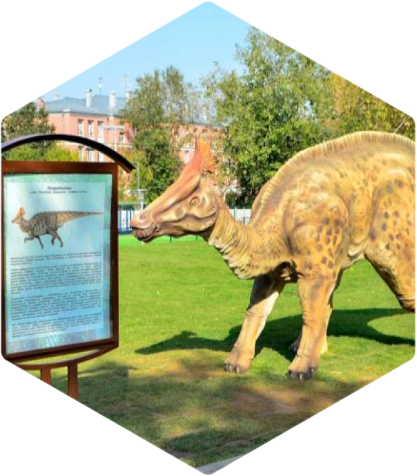 Академический
Подписчики:ВК11180ТГ1930Всего13110
Просмотров в месяц:323 310
-
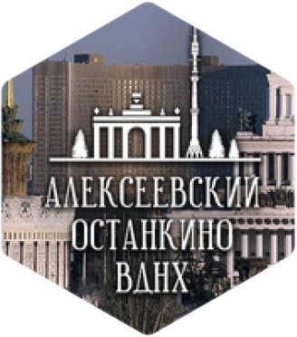 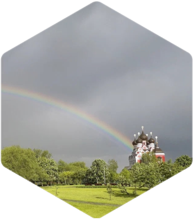 Алексеевский и Останкинский
Подписчики:ВК14210ТГ1937Всего16147
Просмотров в месяц:817 370
-
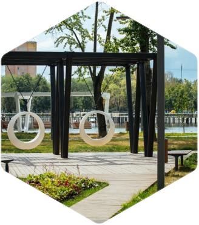 Алтуфьевский
Подписчики:ВК11655ТГ1582Всего13237
Просмотров в месяц:244 960
-
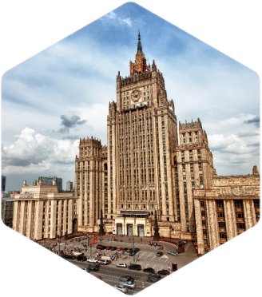 Арбат
Подписчики:ВК5382ТГ1044Всего6426
Просмотров в месяц:46 680
-
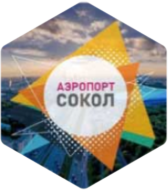 
Аэропорт и Сокол
Подписчики:ВК8632ТГ1024Всего9656
Просмотров в месяц:241 900
-
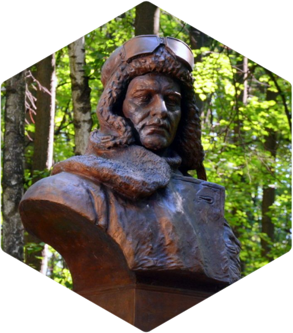 Бабушкинский
Подписчики:ВК13758ТГ1011Всего14769
Просмотров в месяц:595 820
-
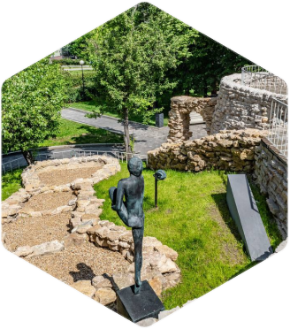 Басманный
Подписчики:ВК5841ТГ1131Всего6972
Просмотров в месяц:151 055
-
Беговой и Хорошевский
Подписчики:ВК8085ТГ1190Всего9275
Просмотров в месяц:162 200
-
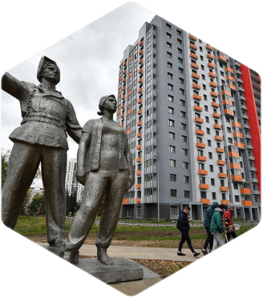 Бескудниковский
Подписчики:ВК17813ТГ1197Всего19010
Просмотров в месяц:722 150
-
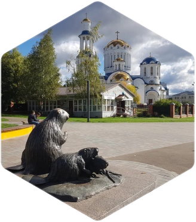 Бибирево
Подписчики:ВК17266ТГ1599Всего18865
Просмотров в месяц:866 480
-
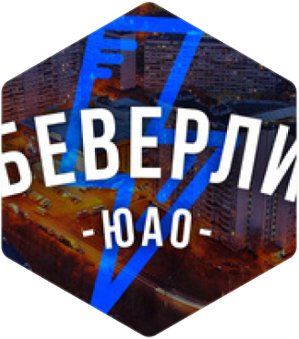 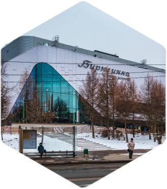 Бирюлево
Подписчики:ВК21002ТГ1572Всего22574
Просмотров в месяц:804 790
-
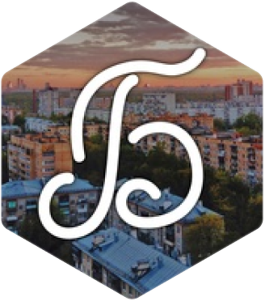 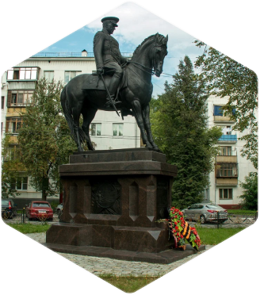 Богородское
Подписчики:ВК13429ТГ1086Всего14515
Просмотров в месяц:508 180
-
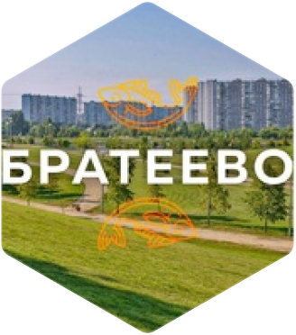 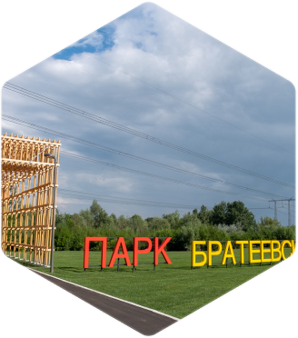 Братеево
Подписчики:ВК11622ТГ1735Всего13357
Просмотров в месяц:367 500
-
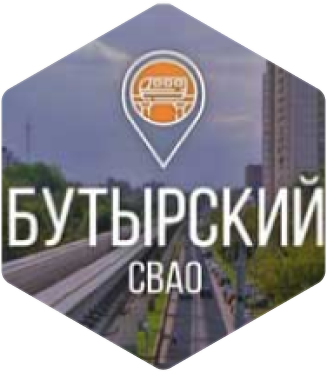 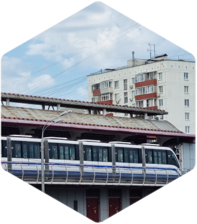 Бутырский
Подписчики:ВК8439ТГ2047Всего10486
Просмотров в месяц:415 380
-
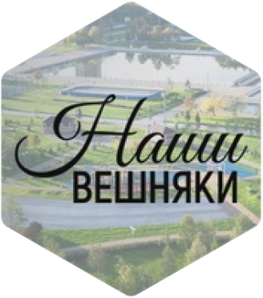 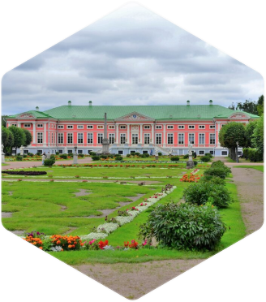 Вешняки
Подписчики:ВК13701ТГ1162Всего14863
Просмотров в месяц:745 370
-
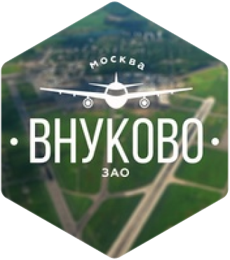 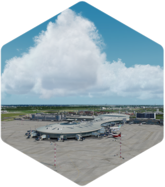 Внуково
Подписчики:ВК8774ТГ864Всего9638
Просмотров в месяц:373 780
-
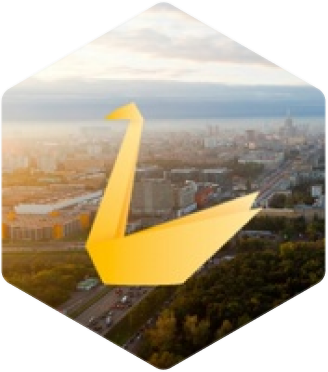 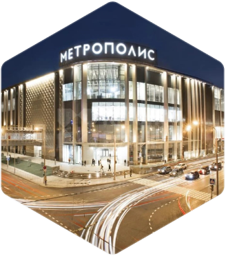 Войковский
Подписчики:ВК9828ТГ1085Всего10913
Просмотров в месяц:289 560
-
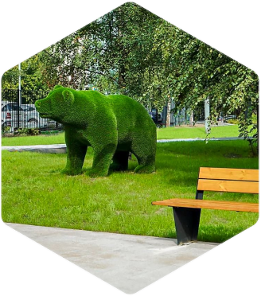 Восточное Дегунино
Подписчики:ВК17816ТГ1123Всего18939
Просмотров в месяц:347 620
-
Восточное Измайлово
Подписчики:ВК11799ТГ792Всего12591
Просмотров в месяц:285 065
-
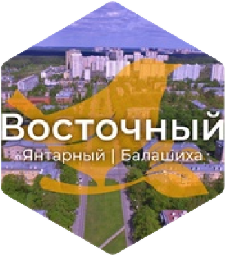 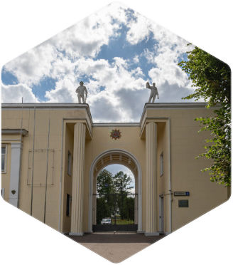 Восточный
Подписчики:ВК14465ТГ1267Всего15732
Просмотров в месяц:486 450
-
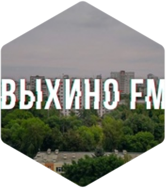 Выхино
Подписчики:ВК12123ТГ1122Всего13245
Просмотров в месяц:453 560
-
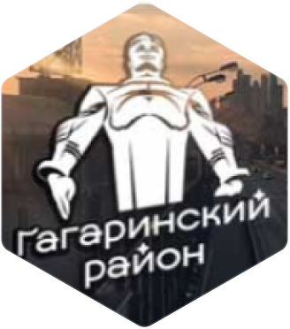 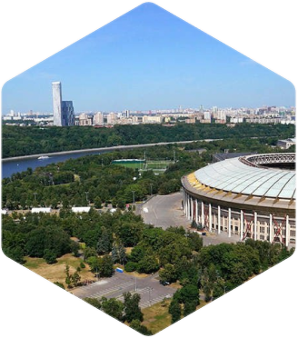 Гагаринский
Подписчики:ВК8588ТГ980Всего9568
Просмотров в месяц:194 240
-
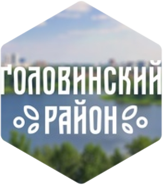 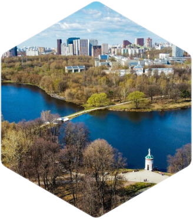 Головинский
Подписчики:ВК9637ТГ1051Всего10688
Просмотров в месяц:371 965
-
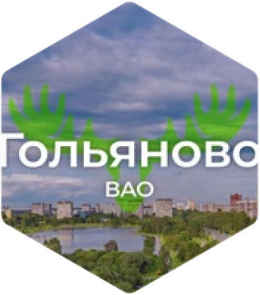 
Гольяново
Подписчики:ВК20541ТГ1099Всего21640
Просмотров в месяц:753 065
-
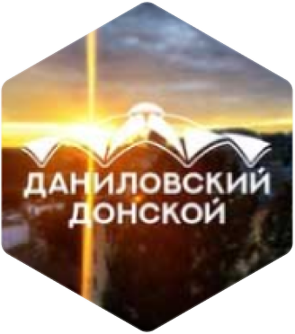 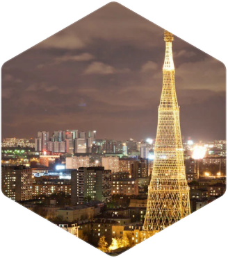 Даниловский и Донской
Подписчики:ВК8502ТГ1715Всего10217
Просмотров в месяц:232 680
-
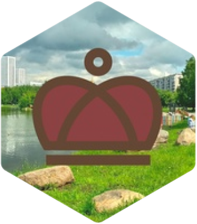 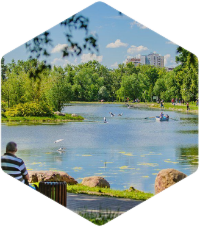 Дмитровский
Подписчики:ВК20601ТГ2848Всего23449
Просмотров в месяц:1 633 850
-
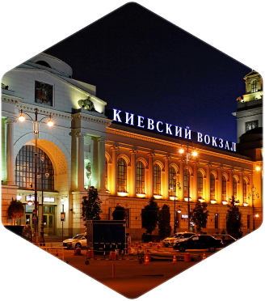 Дорогомилово
Подписчики:ВК8422ТГ1036Всего9458
Просмотров в месяц:259 330
-
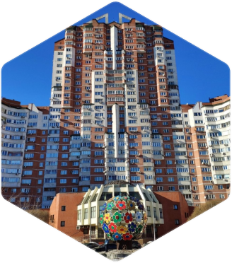 Жулебино
Подписчики:ВК13300ТГ874Всего14174
Просмотров в месяц:521 690
-
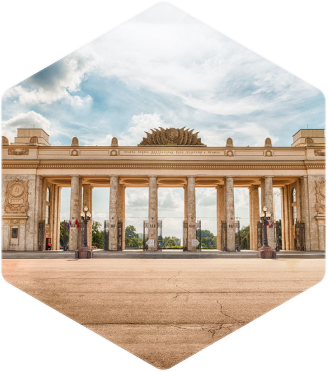 Замоскворечье и Якиманка
Подписчики:ВК8442ТГ1073Всего9515
Просмотров в месяц:136 770
-
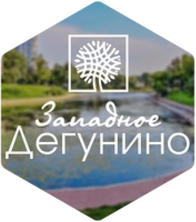 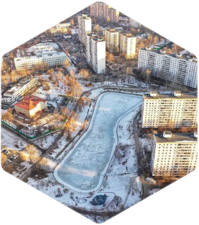 Западное Дегунино
Подписчики:ВК13196ТГ1351Всего14547
Просмотров в месяц:790 750
-
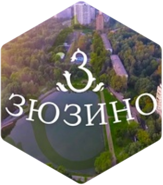 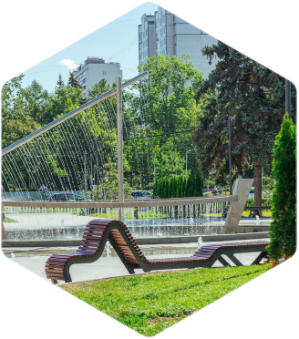 Зюзино
Подписчики:ВК11786ТГ1170Всего12956
Просмотров в месяц:585 270
-
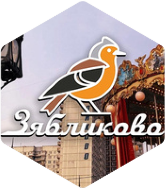 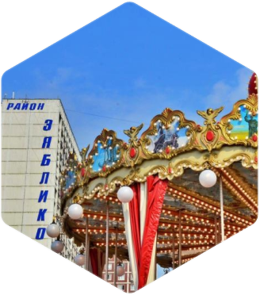 Зябликово
Подписчики:ВК11706ТГ1607Всего13313
Просмотров в месяц:504 940
-
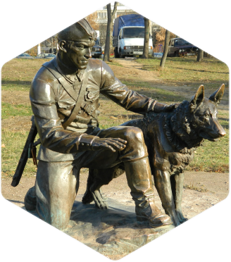 Ивановское
Подписчики:ВК16967ТГ1287Всего18254
Просмотров в месяц:584 680
-
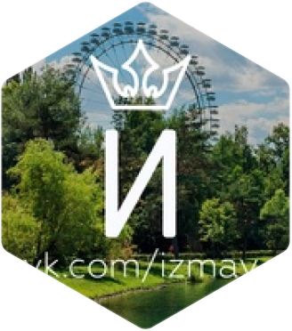 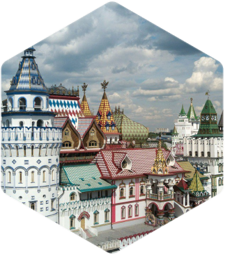 Измайлово
Подписчики:ВК13228ТГ1111Всего14339
Просмотров в месяц:336 510
-
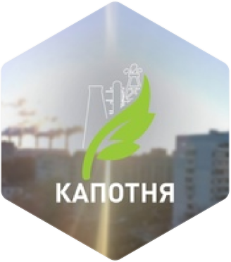 Капотня
Подписчики:ВК9183ТГ1716Всего10899
Просмотров в месяц:317 640
-
Киевский
Подписчики:ВК9779ТГ1013Всего10792
Просмотров в месяц:336 150
-
Коньково
Подписчики:ВК8497ТГ985Всего9482
Просмотров в месяц:249 830
-
Коптево
Подписчики:ВК15203ТГ1150Всего16353
Просмотров в месяц:727 350
-
Косино-Ухтомский
Подписчики:ВК11953ТГ1095Всего13048
Просмотров в месяц:285 685
-
Котловка
Подписчики:ВК8890ТГ965Всего9855
Просмотров в месяц:261 620
-
Красносельский
Подписчики:ВК5430ТГ1065Всего6495
Просмотров в месяц:89 790
-
Крылатское
Подписчики:ВК13547ТГ867Всего14414
Просмотров в месяц:250 870
-
Крюково
Подписчики:ВК13593ТГ567Всего14160
Просмотров в месяц:314 170
-
Кузьминки
Подписчики:ВК11358ТГ1970Всего13328
Просмотров в месяц:594 580
-
Кунцево
Подписчики:ВК17940ТГ2850Всего20790
Просмотров в месяц:814 260
-
Куркино
Подписчики:ВК7141ТГ1029Всего8170
Просмотров в месяц:172 020
-
Левобережный
Подписчики:ВК9036ТГ1063Всего10099
Просмотров в месяц:263 965
-
Лефортово
Подписчики:ВК13367ТГ1702Всего15069
Просмотров в месяц:499 570
-
Лианозово
Подписчики:ВК8655ТГ1815Всего10470
Просмотров в месяц:249 940
-
Ломоносовский
Подписчики:ВК5849ТГ1050Всего6899
Просмотров в месяц:142 390
-
Лосиноостровский
Подписчики:ВК13549ТГ773Всего14322
Просмотров в месяц:842 020
-
Люблино
Подписчики:ВК16492ТГ1845Всего18337
Просмотров в месяц:529 070
-
Марфино
Подписчики:ВК10258ТГ1708Всего11966
Просмотров в месяц:180 700
-
Марьина Роща
Подписчики:ВК8410ТГ1736Всего10146
Просмотров в месяц:360 600
-
Марьино
Подписчики:ВК22623ТГ1708Всего24331
Просмотров в месяц:1 628 230
-
Матушкино, Савелки, Старое Крюково и Силино
Подписчики:ВК10361ТГ733Всего11094
Просмотров в месяц:351 430
-
Медведково
Подписчики:ВК16441ТГ515Всего16956
Просмотров в месяц:536 260
-
Метрогородок
Подписчики:ВК11019ТГ1082Всего12101
Просмотров в месяц:582 160
-
Мещанский
Подписчики:ВК5727ТГ1045Всего6772
Просмотров в месяц:102 835
-
Митино
Подписчики:ВК11447ТГ1213Всего12660
Просмотров в месяц:515 240
-
Можайский
Подписчики:ВК14844ТГ1710Всего16554
Просмотров в месяц:1 008 480
-
Молжаниновский
Подписчики:ВК9637ТГ1079Всего10716
Просмотров в месяц:380 520
-

Москворечье-Сабурово
Подписчики:ВК7435ТГ1752Всего9187
Просмотров в месяц:381 150
-
Московский
Подписчики:ВК12543ТГ1551Всего14094
Просмотров в месяц:271 970
-
Мосрентген и Коммунарка
Подписчики:ВК8767ТГ969Всего9736
Просмотров в месяц:134 570
-
Нагатинский затон и Нагатино-Садовники
Подписчики:ВК19410ТГ1856Всего21266
Просмотров в месяц:1 399 580
-
Нагорный
Подписчики:ВК9429ТГ1842Всего11271
Просмотров в месяц:471 380
-
Некрасовка
Подписчики:ВК20227ТГ1586Всего21813
Просмотров в месяц:829 540
-
Нижегородский
Подписчики:ВК5728ТГ1044Всего6772
Просмотров в месяц:192 470
-
Ново-Переделкино
Подписчики:ВК11513ТГ902Всего12415
Просмотров в месяц:292 630
-
Новокосино
Подписчики:ВК15955ТГ1195Всего17150
Просмотров в месяц:546 530
-
Обручевский
Подписчики:ВК7863ТГ1051Всего8914
Просмотров в месяц:371 965
-
Орехово-Борисово
Подписчики:ВК25362ТГ927Всего26289
Просмотров в месяц:1 272 510
-
Отрадное
Подписчики:ВК10000ТГ848Всего10848
Просмотров в месяц:410 380
-
Очаково-Матвеевское
Подписчики:ВК14932ТГ1079Всего16011
Просмотров в месяц:537 210
-
Перово и Новогиреево
Подписчики:ВК18985ТГ1237Всего20222
Просмотров в месяц:892 040
-
Печатники
Подписчики:ВК13547ТГ2034Всего15581
Просмотров в месяц:1 075 970
-
Покровское-Стрешнево
Подписчики:ВК5856ТГ1082Всего6938
Просмотров в месяц:213 590
-
Преображенское
Подписчики:ВК9915ТГ1073Всего10988
Просмотров в месяц:10 988
-
Пресненский
Подписчики:ВК9130ТГ975Всего10105
Просмотров в месяц:358 440
-
Проспект Вернадского
Подписчики:ВК7904ТГ938Всего8842
Просмотров в месяц:270 700
-

Раменки
Подписчики:ВК9941ТГ881Всего10822
Просмотров в месяц:275 320
-
Ростокино
Подписчики:ВК11771ТГ1882Всего13653
Просмотров в месяц:554 410
-
Рязанский
Подписчики:ВК13280ТГ1768Всего15048
Просмотров в месяц:714 390
-
Савеловский
Подписчики:ВК7541ТГ1452Всего8993
Просмотров в месяц:279 030
-
Свиблово
Подписчики:ВК8107ТГ1681Всего9788
Просмотров в месяц:337 460
-
Северное Бутово
Подписчики:ВК12097ТГ1070Всего13167
Просмотров в месяц:329 190
-
Северное Измайлово
Подписчики:ВК12151ТГ861Всего13012
Просмотров в месяц:306 555
-
Северный
Подписчики:ВК12667ТГ2020Всего14687
Просмотров в месяц:454 810
-
Соколиная Гора
Подписчики:ВК12037ТГ836Всего12873
Просмотров в месяц:346 750
-

Сокольники
Подписчики:ВК10641ТГ1589Всего12230
Просмотров в месяц:354 060
-
Солнцево
Подписчики:ВК17399ТГ1262Всего18661
Просмотров в месяц:560 840
-
Строгино
Подписчики:ВК21884ТГ1958Всего23842
Просмотров в месяц:1 546 420
-
Таганка
Подписчики:ВК9581ТГ998Всего10579
Просмотров в месяц:430 700
-
Тверской
Подписчики:ВК5353ТГ1070Всего6423
Просмотров в месяц:71 180
-
Текстильщики
Подписчики:ВК9922ТГ1778Всего11700
Просмотров в месяц:444 300
-
Теплый Стан
Подписчики:ВК9922ТГ908Всего10830
Просмотров в месяц:359 180
-
Тимирязевский
Подписчики:ВК12240ТГ1239Всего13479
Просмотров в месяц:323 310
-
Троицк
Подписчики:ВК17534ТГ1564Всего19098
Просмотров в месяц:
-
Тропарево-Никулино
Подписчики:ВК9291ТГ1015Всего10306
Просмотров в месяц:277 060
-
Тушино
Подписчики:ВК19529ТГ1335Всего20864
Просмотров в месяц:795 160
-
Филевский парк
Подписчики:ВК9229ТГ984Всего10213
Просмотров в месяц:263 000
-
Фили-Давыдково
Подписчики:ВК11891ТГ920Всего12811
Просмотров в месяц:315 260
-
Хамовники
Подписчики:ВК7592ТГ1077Всего8669
Просмотров в месяц:154 890
-
Ховрино
Подписчики:ВК10655ТГ1712Всего12367
Просмотров в месяц:285 725
-
Хорошево-Мневники
Подписчики:ВК11636ТГ1140Всего12776
Просмотров в месяц:514 710
-
Царицыно
Подписчики:ВК8151ТГ1503Всего9654
Просмотров в месяц:350 200
-
Чертаново
Подписчики:ВК25926ТГ1042Всего26968
Просмотров в месяц:1 107 620
-
Черемушки
Подписчики:ВК9847ТГ970Всего10817
Просмотров в месяц:357 660
-
Щербинка
Подписчики:ВК11276ТГ1009Всего12285
Просмотров в месяц:278 480
-
Щукино
Подписчики:ВК7755ТГ995Всего8750
Просмотров в месяц:230 310
-
Южное Бутово
Подписчики:ВК15027ТГ862Всего15889
Просмотров в месяц:273 590
-
Южнопортовый
Подписчики:ВК8187ТГ1754Всего9941
Просмотров в месяц:205 130
-
Ярославский
Подписчики:ВК12883ТГ1879Всего14762
Просмотров в месяц:830 120
-
Ясенево
Подписчики:ВК10670ТГ1074Всего11744
Просмотров в месяц:566 770


Проекты, которые объединяют город
Проект Мосопрос
Каждую неделю
Мы проводим опросы среди москвичей и задаем им небанальные вопросы.
В опросах принимают участие более 10 тысяч голосов от участников сообществ сети М125.
Проект Герои Города
Каждый месяц
Подписчики выдвигают номинантов от каждого района Москвы и выбирают Героя города.
Им может стать любой, кто сделал что-то важное: служит городу, добивается успехов, становится героем по собственной воле или по воле обстоятельств.
Проект Итоги Города
Каждый год
В конце года мы подводим итоги в полюбившимся всем формате голосования. Оно проходит в трех номинациях: люди, места, события.
Самые яркие личности: в год количество героев достигает 700 человек.
Новые точки притяжения или уголки города, которые покорили сердце москвичей.
Важные районные и/или городские события, которые привлекли внимание горожан.
Информационная поддержка
Сеть М125 поддерживает московские проекты, места и события важные и интересные для горожан.